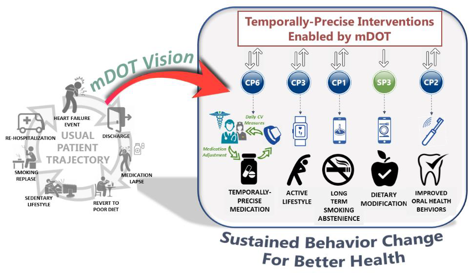

VISION

We envision a powerful new paradigm for maintaining health and managing the growing burden of chronic diseases, specifically, temporally-precise mHealth interventions that are optimized to the moment-to-moment biopsychosocial-environmental context of each individual to directly manage, treat, and prevent medical conditions. The long-term goal of this center is to establish a national technological resource for enabling optimal health care (and self-care) for each individual by leveraging noisy but ubiquitous measures of health, behaviors, surrounding contexts, and responses to treatments and interventions via mHealth biomarkers.
To illustrate our vision, consider a high-need patient, Sam, who has just been discharged from the hospital after treatment (fitted with a prosthetic heart valve) for a new onset of heart failure. Under a currently typical care scenario, Sam receives prescription medication and has one week and one month follow up visits scheduled. To prevent recurrence, he is recommended to reduce sedentary behavior, improve his diet, quit smoking, and brush twice daily to reduce his risk of heart valve infection. Sam is motivated and works on each of these recommendations initially. But, in the absence of any active ongoing support, he gradually falls back to his prehospitalization lifestyle and ends up in the hospital again with a second heart failure event.
It does not have to be that way. mDOT technologies enable fundamentally new behavioral intervention approaches to substantially increase the likelihood of success of maintaining a healthier lifestyle. mDOT works with multiple collaborative projects to enable temporally-precise mHealth interventions that can be applied to patients like Sam. At the time of discharge, Sam can be provided with sensors that can provide regular measurements of cardiovascular states remotely. Sam’s clinicians can use these measures to adjust his medications accordingly, with confidence that missing data and uncertainty are robustly handled. Second, Sam can be provided with a temporally-precise physical activity intervention app (on his smartphone and wearable device) that gives him personalized recommendations on how to improve physical activity optimized to his current life circumstances and preferences. Third, Sam can be provided with a temporally-precise intervention to stay abstinent from smoking. Finally, Sam can be provided with personalized interventions to control overeating and to develop a habit of brushing and flossing twice daily.
None of these interventions will keep Sam out of the hospital if Sam does not maintain these new behaviors. mDOT technologies will initially assist Sam with navigating the challenges of multiple behavior change by coordinating among the suite of interventions that he has been provided with. mDOT technologies will keep Sam engaged for the long run by making sure that intervention apps behave sensibly in the absence of needed inputs when Sam forgets to charge or carry his personal devices; and by adapting intervention intensity as his commitment for each behavior ebbs and flows over time and his life circumstances evolve and change. Finally, mDOT technologies ensure that Sam doesn’t need to worry about risks to his privacy as a result of engaging with mHealth interventions. In summary, health behaviors are powerful drivers of health states, often with effects on par with or exceeding the effect of pharmaceuticals. mDOT will harness sensors and machine learning to support patients like Sam to become engaged, effective, long-term partners in their own disease prevention and management.